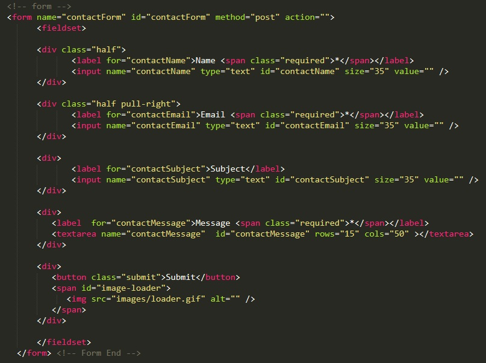
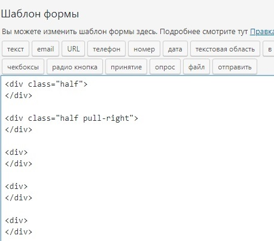
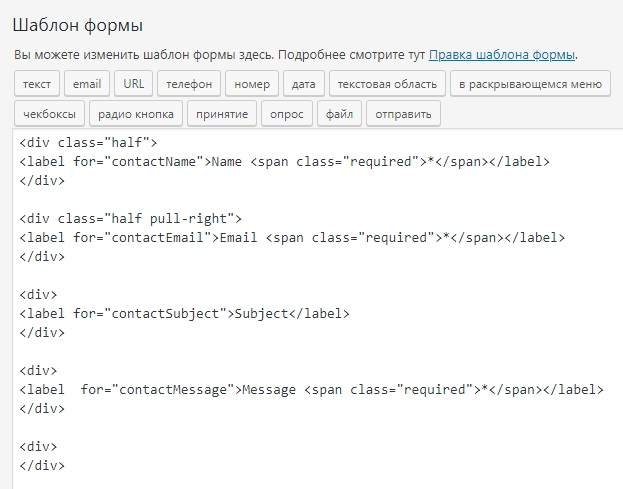
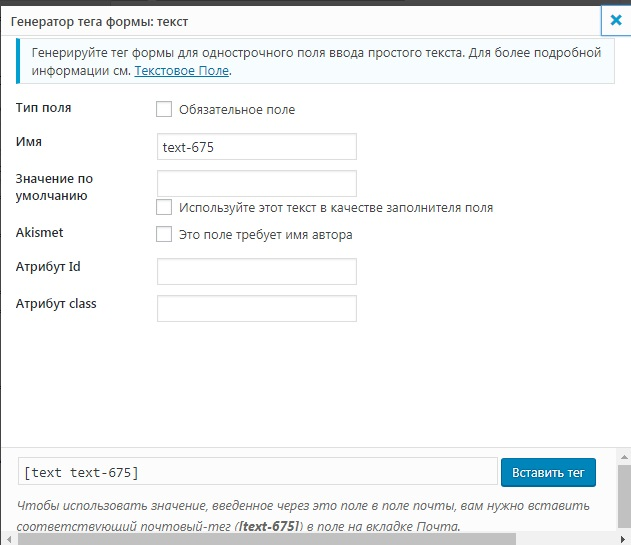
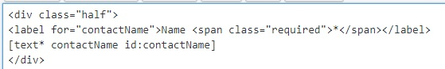
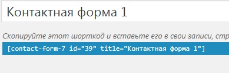
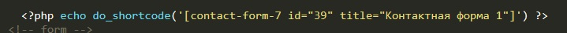
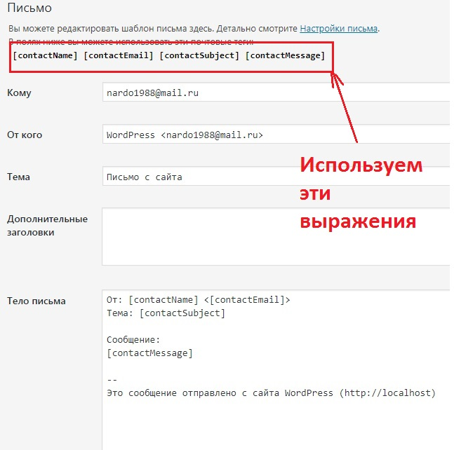

Контактные формы в WP могут реализовываться двумя способами. С помощью плагинов и с помощью собственного кода php
Устанавливаем и активируем плагин, после чегов консоли появится новый пункт "Contact Form 7"
По умолчанию там уже будет создана одна контактная форма, мы можем ее отредактировать.
Открываем шаблон формы и удаляем все ее содержимое. Теперь нам надо сделать нашу контактную форму в соответствии с нашей версткой. Рассмотрим верстку:
Наша контактная форма находится внутри тега form и каждый элемент формы заключен в блок div. Так же и будем делать. Добавим в наш шаблон контактной формы пять блоков div (обратим внимание на то, что в верстке у первых двух блоков задали классы, добавляем так же с наименование классов, что бы применились стили)
Далее в каждом блоке у нас есть поля ввода и надпись label. Надпись label мы просто копируем из верстки
Теперь необходимо добавить поля ввода, для этого пользуемся кнопками в верхней части шаблона. В первом поле у нас обыкноменный input с типом text. Для добавления встаем внутрь первого блока div и жмем кнопку "текст". Откроется форма добавления поля:
В нашей верстке в первом поле есть идентификатор - contactName, видимо его сделали для присвоения стилей, поэтому в форме генератора поля в поле "Имя" и "Атрибут Id" вводим те значения которые укзаны в верстке. Ставим галочку "обязательное поле" и жмем кнопку "Вставить тег"
Внутри блока div отобразится код нашего поля input
Аналогично поступаем с остальными полями ввода
Что касается кнопки, то в последний блок мы выбираем атрибут отправить и в поле ярлык пишем submit
Теперь нажимаем сохранить и чуть выше нашего шаблона формы появится код нашего шаблона
Копируем этот код и переходим в нашу верстку. Закоментируем нашу форму в верстке и в блок в котором была наша форма мы вставляем такой код:
После этого наша форма обратной связи должна отображаться корректно в соответствии с нашей версткой и стилями.
После того как форму добавили, возвращаемся в плагин в наш шаблон и выбираем вкладку "Письмо". Здесь надо поправить поля, что бы они содержали те выражения, которые выдаст вам плагин.
